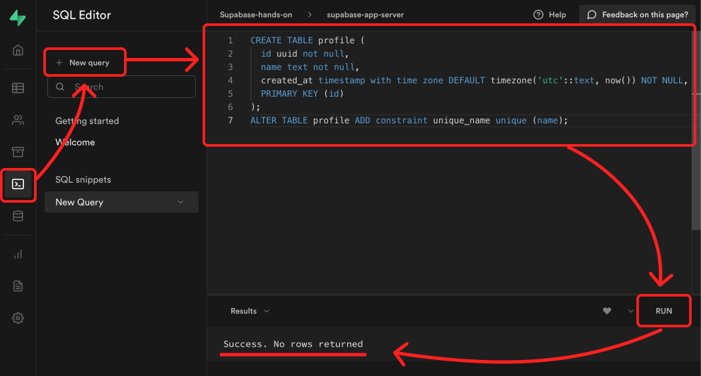
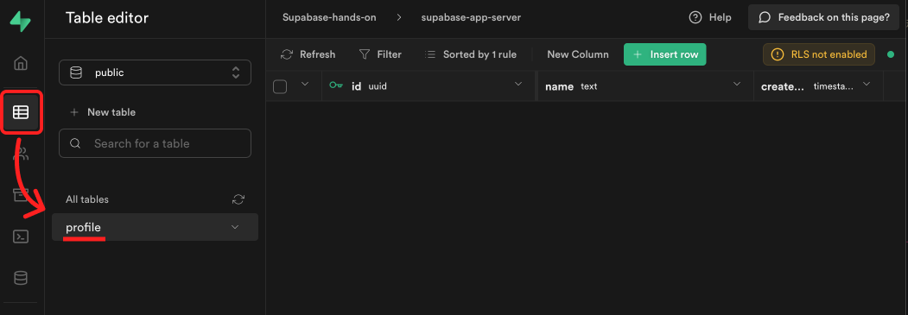
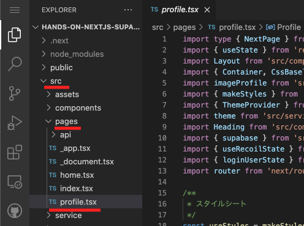
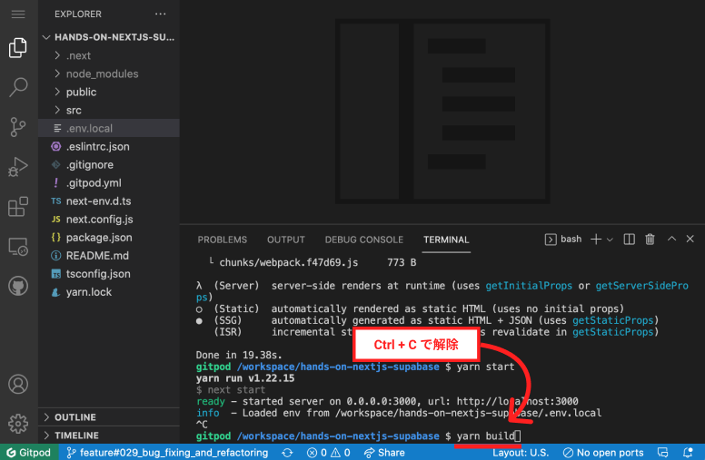
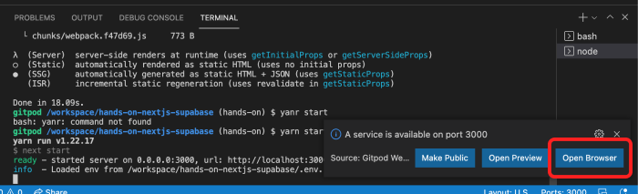
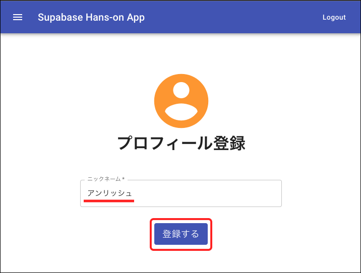
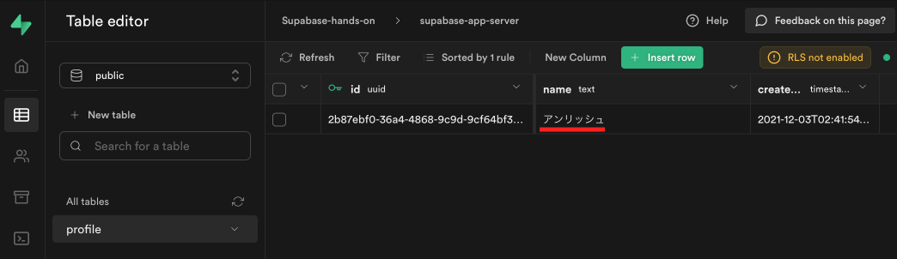

６．プロフィール登録
プロフィールを登録するためのテーブルを作成後、実際に登録作業をしていきます。
✅ Supabase に、プロフィールのテーブルを作成
① SQL を実行して、テーブルを作成
- 左の SQL をクリック
- New query をクリック
- 右に表示されたエディタに、以下の SQL を貼り付け
- RUN をクリック
- Success. No rows returned と表示されていれば成功！
CREATE TABLE profile (
id uuid not null,
name text not null,
created_at timestamp with time zone DEFAULT timezone('utc'::text, now()) NOT NULL,
PRIMARY KEY (id)
);
ALTER TABLE profile ADD constraint unique_name unique (name);

② テーブルが作成されてるか確認
- 左の Table Editor をクリック
- Profile テーブルができていれば成功！

✅ フロント(Next.js)から、プロフィールを登録する
① src → pages → profile.tsx を開いてください。

② 33〜40 行目にある、以下のコードのコメントを解除してください。
// ６．プロフィール登録 - プロフィール登録処理
const { error } = await supabase.from("profile").upsert([
{
id: loginUser.id,
name: name,
},
]);
error && console.error(error);
router.push("/home");
③ yarn build → yarn start をしてください。
ターミナルにて、一度 Ctrl + C を押して、サーバーを解除します。
その後、yarn build と入力して、エンターを押してください。

Done という文字が確認できたら、 yarn start と入力してエンターを押します。
表示された http://localhost:3000 に、カーソルを合わせて「Ctrl+左クリック」を行い、ブラウザにアクセスしてください。

補足：ポップアップをクリックでも可能です。
右下に表示される "A service is available on port 3000"の "Open Browser" をクリックでもブラウザ表示できます。

④ ページ更新後、プロフィール登録画面でニックネーム入力し、登録するをクリック

⑤ Supabase のテーブルにデータが登録されていれば成功！
